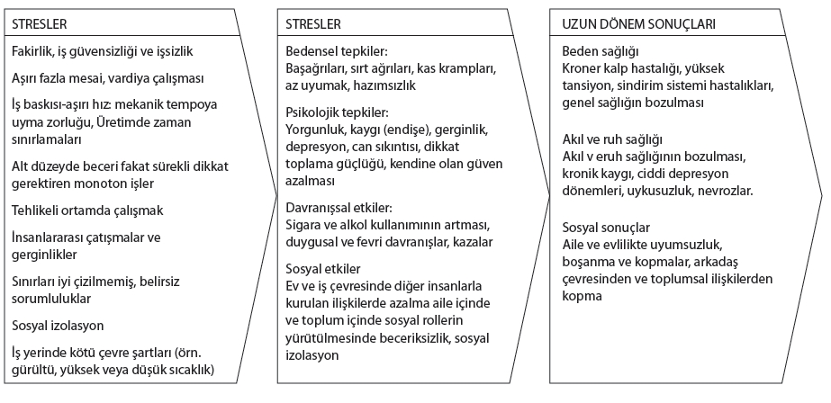

Şekil 14: STRESLER, ZORLANMALAR VE BUNLARIN UZUN DONEMDEKİ SONUCLARI

Not: Konut problemi, aile ici problemler gibi iş dışındaki faktorler de iş stresleriyle birleşerek calışan kişi uzerindeki zorlanmanın artmasına sebep olur.